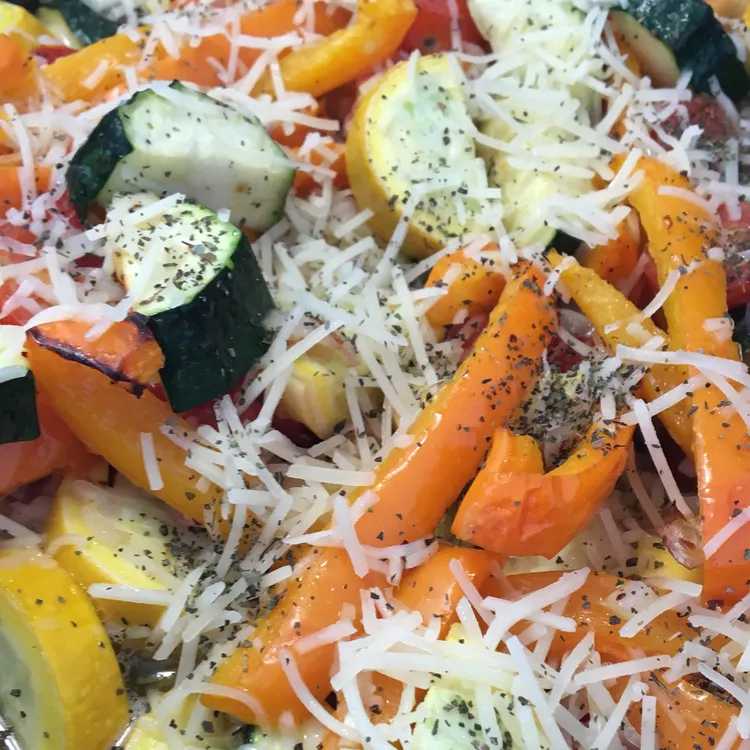

Roasted Garlic Zucchini and Tomato

- 2 zucchini cut in half lengthwise, then cut into ½-inch half moons
- 2 cups quartered ripe tomatoes
- ½ onion, minced
- 3 cloves garlic, minced
- ½ teaspoon crushed red pepper flakes
- ¼ cup olive oil
- salt and pepper to taste
- ½ cup grated Parmesan cheese
- 1 tablespoon chopped fresh basil
- Preheat the oven to 450 degrees F (230 degrees C). Lightly grease a 9x13-inch baking dish.
- Combine zucchini, tomatoes, onion, garlic, and red pepper flakes in the prepared baking dish. Drizzle with olive oil; season with salt and pepper. Mix well.
- Roast in the preheated oven until vegetables are tender and slightly golden, about 18 minutes. Remove from the oven; sprinkle with Parmesan cheese and basil.